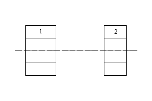
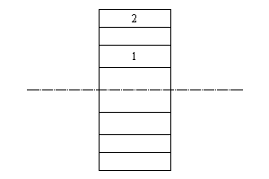
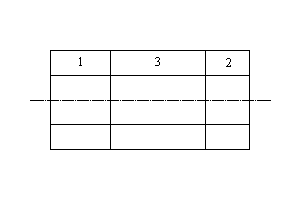
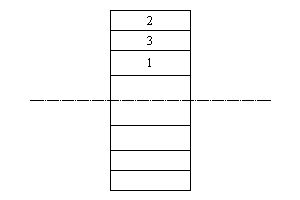
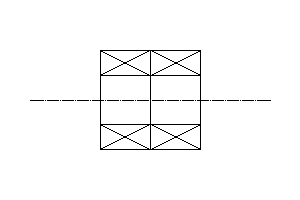
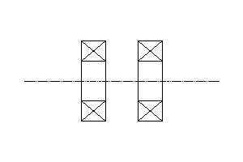

Методика расчета индуктивности системы из двух соосных цилиндрических соленоидов
 
На практике достаточно часто приходится иметь дело с системами из двух соосных цилиндрических соленоидов (катушек), некоторые из геометрических размеров которых совпадают, и намотанными одним и тем же проводом по одной технологии, включенных встречно [4] или последовательно [7]. Рассчитать собственную индуктивность цилиндрического соленоида можно, например, с помощью программы Coil [1]. Чтобы найти индуктивность системы двух последовательно или встречно включенных соленоидов 1 и 2, необходимо знать их взаимную индуктивность M12. Тогда:
L = L1 + L2 + 2M12 при последовательном включении
L = L1 + L2 - 2M12 при встречном включении
где L - индуктивность системы соленоидов, L1, L2 - собственная индуктивность каждого из соленоидов, М12 - взаимная индуктивность соленоидов.
Чтобы найти взаимную индуктивность M12, воспользуемся фиктивной катушкой 3, расположенной между соленоидами 1 и 2.
 
Тогда можно записать систему уравнений:
L123 = L1 + L2 + L3 + 2M12 + 2M13 + 2M23
L13 = L1 + L3 + 2M13
L23 = L2 + L3 + 2M23
Здесь L123 - собственная индуктивность соленоида, составленного из катушек 1, 2 и 3, L13 - собственная индуктивность соленоида, составленного из катушек 1 и 3, L23 - собственная индуктивность соленоида, составленного из катушек 2 и 3, L1, L2 и L3 - собственные индуктивности соленоидов 1, 2 и фиктивной катушки 3, соответственно.
Исключая из этой системы уравнений взаимные индуктивности M13 и M23, получим:
M12 = 0.5 (L123 + L3 - L13 - L23)
Каждая из величин в выражении для взаимной индуктивности M12 может быть рассчитана с помощью основной или демонстрационной версии программы Coil [1] по известным геометрическим размерам системы соленоидов (внутренний и внешний радиус, высота, расстояние между соленоидами), диаметру обмоточного провода и фактору упаковки [6].
Пример 1: дифференциальный электромагнитный (магнитоэлектрический) привод [4]

Для дифференциального соленоида электромагнитного (магнитоэлектрического) привода, когда одинаковые катушки вплотную примыкают друг к другу и включены встречно, можно записать:
L = 2L0 - 2M
или
L = 4L0 - L+
где L - индуктивность дифференциального соленоида, L0 - собственная индуктивность каждой из катушек, M - взаимная индуктивность катушек, L+ - собственная индуктивность соленоида, составленного из двух катушек при их последовательном включении.
Например, для дифференциального соленоида с размерами каждой из составляющих его катушек R1 = 0.01 м (радиус отверстия), R2 = 0.02 м (внешний радиус), H = 0.03 м (высота, то есть высота дифференциального соленоида равна 2H = 0.06 м), намотанных проводом диаметром 0.001 м (1 мм) с фактором упаковки Lambda = 0.6, расчет с помощью программы Coil дает:
L0 = 0.8 мГн, L+ = 2 мГн
Тогда L = 4 ∙ 0.8 - 2 = 3.2 - 2 = 1.2 мГн
Аналогичный результат дает расчет с помощью программы M_Drive [3].
Пример 2: кольца Гельмгольца [7]

Для системы колец Гельмгольца, составленных из одинаковых последовательно включенных катушек, можно записать:
L = 2L0 + 2M
или
L = 2L0 + L030 + L3 - 2L03
где L - индуктивность системы колец Гельмгольца, L0 - собственная индуктивность каждой из составляющих систему катушек, M - взаимная индуктивность катушек, L3 - собственная индуктивность фиктивной катушки, расположенной в объеме между катушками системы, L030 - собственная индуктивность соленоида, составленного из катушек системы и фиктивной катушки, L03 - собственная индуктивность соленоида, составленного из фиктивной катушки и одной из катушек системы.
Например, для системы колец Гельмгольца с размерами каждой из составляющих ее катушек R1 = 0.01 м (радиус отверстия), R2 = 0.02 м (внешний радиус), H = 0.03 м (высота), намотанных проводом диаметром 0.001 м (1 мм) с фактором упаковки Lambda = 0.6, при расстоянии между катушками, равном 0.01 м (высота фиктивной катушки) расчет с помощью программы Coil дает:
L0 = 0.8 мГн, L030 = 2.4 мГн, L3 = 0.15 мГн, L03 = 1.2 мГн
Тогда L = 2 ∙ 0.8 + 2.4 + 0.15 - 2 ∙ 1.2 = 1.6 + 2.4 + 0.15 - 2.4 = 1.75 мГн
Аналогичный результат дает расчет с помощью программы H_Coils [2].
Ссылки:
03.11.2005
06.02.2006
10.12.2006
Альтернативные источники
энергии
Компьютеры и
Интернет
Магнитные поля
Механотронные системы
Перспективные
разработки
Электроника и технология